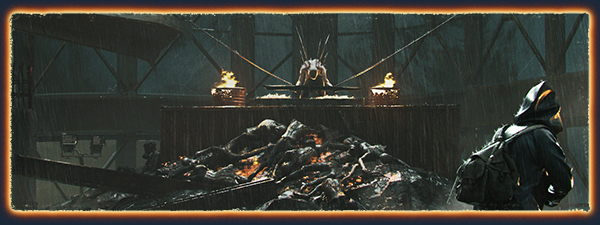
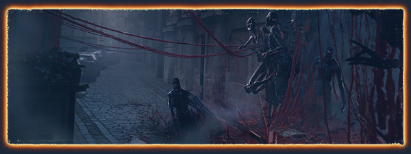
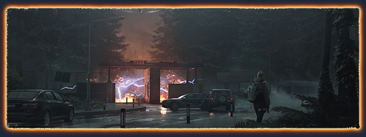

Charlie Gray tinha tudo aquilo que sempre desejara. Ela era uma engenheira talentosa e uma astronauta europeia, cuja carreira lhe trouxe tudo o que a maior parte das pessoas apenas sonha em obter. Depois dos traumáticos eventos de um retorno à Terra que deu errado, Charlie já não é mais a mesma. Charlie agora está sozinha em um mundo aftermatch/deserto e fragmentado, enquanto sua vida atravessa um momento conturbado. Tudo o que ela sabe é que precisa encontrar a única coisa que ainda importa: Sammy.
Analise os arredores e utilize os recursos urbanos à disposição. Itens mundanos podem se transformar em ferramentas valiosas para enfrentar os seres insondáveis que ocupam a cidade. Estude as fraquezas dos alienígenas e decida a melhor abordagem para vencer aqueles que adorariam usar você como uma oferenda.
UMA PODEROSA HISTÓRIAComo a humanidade se comporta diante de eventos extraordinários? Ela se une e fica mais forte ou se desintegra? Ficamos presos ao passado ou nos dedicamos a um futuro possível? AFTERMATH se debruça sobre as perguntas filosóficas e psicológicas, entre outras, que nos perguntamos quando estamos diante de uma situação impossível.
 ESTILO ÚNICODesfrute de uma estética criada pela mente brilhante de Alessandro Bavari, o enigmático mestre italiano responsável pelo design de Alien: Covenant, de Ridley Scott, e de Suspiria.
VIDA E MORTE SÃO MISTERIOSASCharlie está presa em um pesadelo real. A explicação para o que está acontecendo é o principal mistério que assombra todos os momentos dela. Se a morte não é o fim, então o que seria?
TRILHA SONORA ORIGINALAFTERMATH oferece uma trilha sonora rica e variada, incluindo trabalhos originais de artistas como UNKLE, Planet Funk e muitos outros. JOGABILIDADE
ENFRENTE SEU INIMIGOCharlie está sendo caçada por um adversário obscuro. Desvende o mistério deste caçador que parece ser invencível e use seu arsenal para superá-lo e sobreviver. Que outras forças podem estar à espreita nos destroços da cidade seus arredores? O que restou da humanidade?
 SAUDÁVEL E PREPARADAAlimente-se bem para manter a saúde física e mental e ficar a um passo a frente do inimigo. Esteja alerta e vigilante para subjugar os oponentes.
CRIAÇÃO REALISTAAFTERMATH usa a mente de engenheira e a abordagem científica de Charlie para conceber um sistema de criação inovador. Observe os arredores para inventar um diagrama, então encontre e combine as peças necessárias para se adaptar e prosperar.
AMBIENTE FAMILIARExplore uma recriação detalhada de uma cidade com uma história rica, esfacelada pelo poder aterrorizante de um antigo artefato alienígena que surgiu ameaçadoramente dos céus.